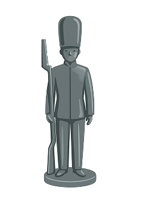
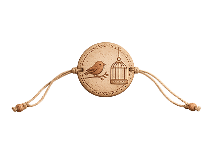

1800-1900
L’INVENZIONE DELLO STUPORE
Benvenuti nel secolo che ha cambiato per sempre il volto dell'infanzia. Tra il 1800 e il 1900, il mondo corre veloce: le fabbriche iniziano a fischiare, i treni a vapore accorciano le distanze e la scienza sembra capace di realizzare ogni magia. In questo clima di fermento, il giocattolo vive la sua prima vera rivoluzione industriale.
Se prima i giochi erano pezzi unici intagliati a mano, ora nelle botteghe di Norimberga e nelle officine di Londra nascono oggetti in serie che incantano grandi e piccini. È l’epoca dei contrasti: dai delicati teatri di carta che portano l'opera nei salotti borghesi, ai primi giocattoli ottici che sfidano l'occhio umano, creando l'illusione del movimento prima ancora che nascesse il cinema.
In questo secolo, il giocattolo diventa uno strumento per scoprire le leggi della fisica, per sognare avventure in terre lontane e per ammirare la precisione della meccanica. Entrare in una stanza dei giochi dell'Ottocento significa immergersi in un mondo di latta colorata, cavalli a dondolo dai finimenti in vero cuoio e lanterne che proiettano sogni sulle pareti.
Lo sapevi? Nell'Ottocento i giocattoli non erano solo per divertirsi, ma venivano chiamati "istruttivi": dovevano preparare i bambini alle grandi scoperte scientifiche del futuro!


